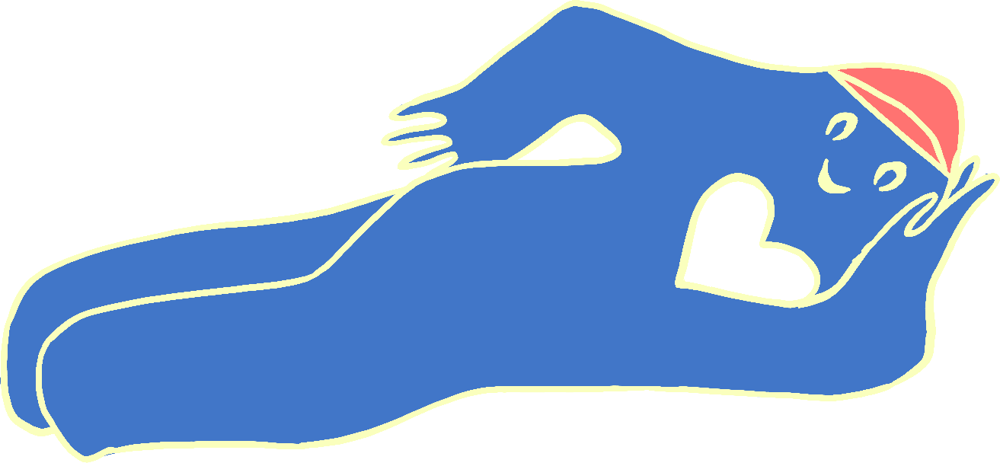

Skateducate er en frivillig forening, der primært arbejder for at få flere FLINTAS til at blive en del af skateboardmiljøet.
Vi startede i 2014 og gennem årene har vi gradvist vokset os til et større crew af frivillige og blevet et velkendt syn i skateboardingmiljøet på tværs af landet.
Vi brænder for skateboarding, fællesskabet og kulturen, der skaber drivkraften for vores initiativer til alverdens begivenheder og events.
...
Skateducate blev startet i det hedengangne år 2014 som et KaosPilot projekt af de to gode medstuderende Anne og Laura. Anne var vild med at skate, men hun var mutters alene i en
mandsdomineret verden af skatere, og der var langt mellem de få piger man mødte på skateboardet.
Så Anne gør, hvad en hver anden person ville gøre: hun starter et fællesskab med henblik på at etablere en forening, så det virker tjekket og moderne.
Gennem tiden har Skateducates formål og aktiviteter været forskelligartede, og allerede fra starten var camps en del af arsenalet hos den lille aarhusianske gruppering.
Foreningen henvendte sig i sin tid primært til young guns (børn og unge), havde ligeledes ungdomsskolehold og var på besøg i mange klubber og folkeskoler.
Men så skete der noget vildt!
I 2017 lavede vi Chicks With Decks – og det blev startskuddet på en ny æra i Skateducate. Nye medlemmer kom til, og foreningen voksede og drømte sig større! Vi skulle have et klubhus, Conny, så vi havde en base for alle de gode medlemmer i crewet, der er drivkraften og kernen af Skateducate. Vi skulle kunne tage på ture sammen som crew, og vi skulle være mere sammen med vores ligesindede søster skate crews, som langsomt, fortsat blomstrer op rundt omkring i DK (Skud ud til Don’t Give A Fox i Roskilde/København, Pushing Daisies i Odense og GripGalz i Aalborg, som vi har arrangeret skate events og crew meet ups med)
Skatesessions
Vi holder fælles skatesessions hver tirsdag fra 16-19:00. Kom og join os!
Vi har udstyr du kan låne og gode fifs, du skal bare komme med gåpåmod.
I det danske vejr er det ikke altid lige fedt at skate udendørs. Derfor holder vi i vintermånederne til i Teknisk afdeling på Tage-Hansens Gade.I det lækre sommervejr er vi at finde på vores base, i klubhuset Conny, beliggende på Institut for (X).
Sommersessions: Godsbanen
Vintersessions: Teknisk Afdeling
I tvivl om hvor vi er? Sted og tidspunkter kan variere afhængigt af vejr og antal frivillige. Derfor er det en god idé at holde
dig opdateret på vores Instagram
Bliv en del af Skateducate
Vi synes altid det er mega fedt at se nye ansigter! Som medlem af Skateducate kan du være med til at bidrage, og selv komme med idéer, til forskelligt sjovt vi laver. Du betaler bare et symbolsk beløb; din alder, enten den fysiske eller mentale.
Hvis det lyder som noget for dig, så meld dig til her:
Conny, vores lyserøde klubhus, holder til på Institut for (X).Det er containeren lige ved siden af skateboard ramperne.Vores frivillige er ofte at finde her, og du er selvfølgelig også velkommen til at kigge forbi og sige hej.
Klubhus Conny
Her ligger vi
Skal vi ud til jer?
Kunne I godt tænke jer vi kommer ud og giver en sjov og alternativ undervisning til jeres elever? Eller måske
engarerende underholdning til festivaler? Skateducate kommer gerne ud og sætter gang i jer. Smid os en mail via formularen nedenfor.

Undervisning som en del af Pushy days 2021
Undervisning i Køge 2016
Undervisning i Køge 2016
Grimfest 2024
Grimfest 2021
Grimfest 2021
Køge 2016
Køge 2016
Pushy Days 2021
Kontakt os
Du kan skrive til os via denne formular, eller på vores sociale medier. Vi svarer som udgangspunkt hurtigst på Instagram.
Kontakt
Beskeden er sendt! Vi snakkes ved snart
Støtte
EchoPrisen 2023
NRGI Værdipulje 2021
Erasmus+ 2024
PUKK Puljen 2024
SKATEDUCATE, 2025
Skovgaardsgade 5c, Institut for (X)
8000 Aarhus C